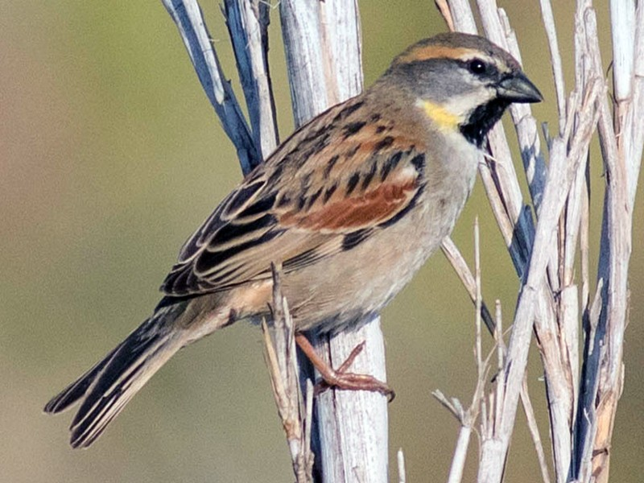

Passer moabiticus
The male Dead Sea Sparrow has grey head, rear neck, and cheeks, and a small black "bib". It has a pale supercilium shading to buff at the rear and yellow neck sides. The upperparts are dark-streaked reddish brown and the underparts are grey white.